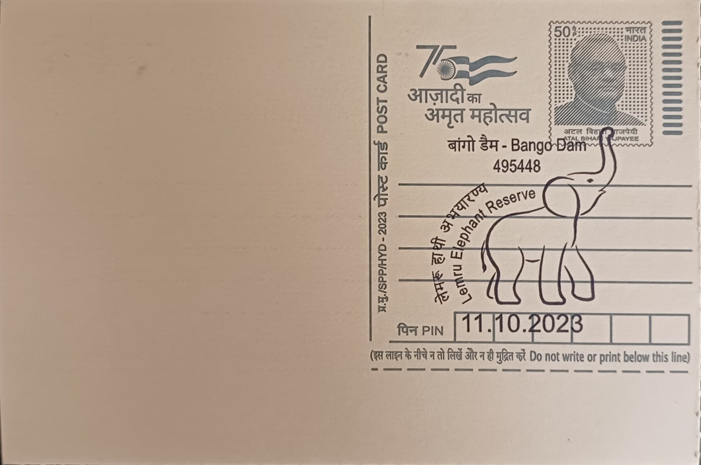

Lemru Elephant Reserve
लेमरू हाथी रिजर्व


The name Lemru is drawn from a village in the Korba-Katghora forest tract that lies at the heart of the proposed reserve, a region of sal and mixed deciduous forest long used seasonally by wild elephant herds rather than permanently inhabited by them. Unlike the state's older wildlife sanctuaries, which trace back to colonial-era shikar reserves or princely hunting grounds, Lemru's identity was shaped entirely by a modern crisis: the steady southward and westward movement of elephant herds from Jharkhand, Odisha and West Bengal into Chhattisgarh from the late 1980s onward, as mining and deforestation closed off their traditional ranges further east.
Lemru belongs to the specific legal category of a Conservation Reserve under the Wild Life (Protection) Act, 1972, a status that permits regulated human activity and local livelihoods to continue within its boundaries, unlike a national park or wildlife sanctuary. Its significance is primarily one of conflict mitigation rather than biodiversity showcase: Chhattisgarh has recorded some of India's highest rates of human-elephant conflict deaths in recent years, concentrated in exactly the coal-bearing districts of Korba, Surguja and Raigarh, and Lemru was conceived as the first dedicated, legally notified space in the state meant to hold elephants rather than simply respond to their incursions after the fact.
The Union government first approved the concept of a roughly 450 square kilometre Lemru Elephant Reserve in 2007, but the proposal remained largely dormant for over a decade. The Chhattisgarh state government revived and substantially enlarged it in 2019, approving an expanded area of close to 1,995 square kilometres spanning Korba and adjoining forest divisions, before formally notifying it as a Conservation Reserve in October 2020 under Section 36A of the Wild Life (Protection) Act. This notified stretch was intended to link up with the existing Badalkhol and Tamor Pingla sanctuaries further east, forming a continuous corridor along which herds could move without repeatedly crossing mining leases, highways and settlements.
The reserve's most noted feature has been less its elephants than the controversy surrounding its own boundaries: much of the 2019-20 expanded area overlapped the Hasdeo Arand coalfield, one of central India's largest contiguous forest tracts and a region allotted for multiple coal blocks. Reports from 2022 onward indicated the state government considering a reduction of the reserve's notified area back toward something closer to the original 450 square kilometre footprint, explicitly to keep coal blocks in the Hasdeo Arand belt outside its limits, a proposal that drew sustained objections from environmental groups and affected Adivasi communities who argued it would defeat the reserve's original conflict-mitigation purpose.
Forest officials in the Korba and Katghora divisions, working with the state Forest Department's elephant task force, continue to monitor herd movements within and around the reserve using radio-collaring and rapid response teams, a mechanism that has become the practical face of Lemru's management in place of the large single protected area once envisaged. The reserve's final shape remains unresolved even as the surrounding Bango Dam area and its post office continue to sit within the broader conflict zone the reserve was designed to address, leaving Lemru's boundaries as an open administrative question still being negotiated between the state's wildlife and mining interests.
| Date of Introduction | October 11, 2023 |
|---|---|
| Address | Branch Postmaster, |
| Bango Dam BO, | |
| Korba (dt.), Chhattisgarh - 495448. |